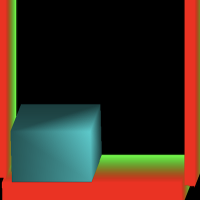
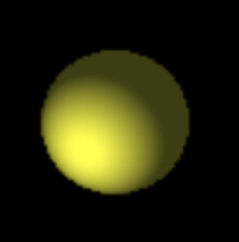

Implemented Functions
|  |
A function to Control a Bar You can control the bar by pressing the arrow keys. |
|  |
A function for a Ball to Be Moved The ball is about to fall down. |
Background and Purpose
I had a task to make a ball bouncing game using OpenGL in my computer graphics class.
I had a task to make a ball bouncing game using OpenGL in my computer graphics class.
What I Learned
- I learned how to create objects in OpenGL by moving and rotating the coordinate system.
- I learned how to detect keyboard input in OpenGL.
- I learned how to use OpenGL in C
Process
- I ran the OpenGL example program that the professor gave me as a hint.
- There were a lot of things I didn't know, such as how to create an object by moving the coordinate system and how to control an object with the arrow keys. So, I looked it up on Google. I implemented it and then executed it based on the contents of the investigation, but the program was abruptly terminated.
- After finding it on Google and modifying the source code, I was able to make it run as intended and implemented a ball bouncing game.
- It's a bit difficult to keep objects in 2D state, so I searched Google for a way to turn 2D objects into 3D and turned 2D objects into 3D.
- In this way, I was able to implement the program I wanted.
A thing to have Done my Best to Strengthen my Abilities
Creating and 3D games with OpenGL
Creating and 3D games with OpenGL
Overall Structure

Used Skills
OpenGL
OpenGL
Development Environment
Visual Studio Community
Visual Studio Community
Further Explanations